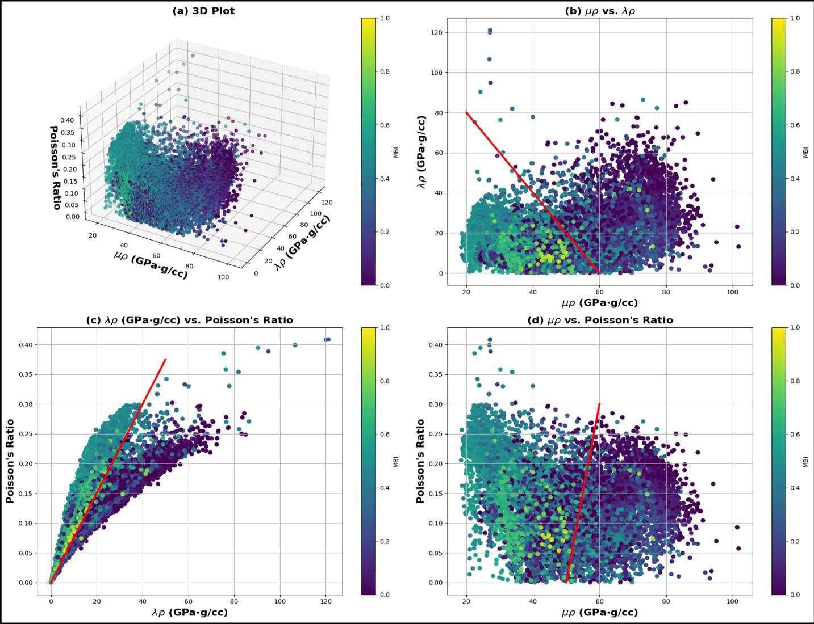

Rock physics
Seismic rock physics and quantitative interpretation
We establish statistical and physics-based relationships between rock properties (total organic carbon, brittleness, permeability, mineralogy) and seismic properties (velocity, density, anisotropy, AVO attributes). These rock physics models enable quantitative interpretation of 3D seismic data for reservoir characterization, with extensive applications to the Wolfcamp Shale and other Permian Basin formations.
